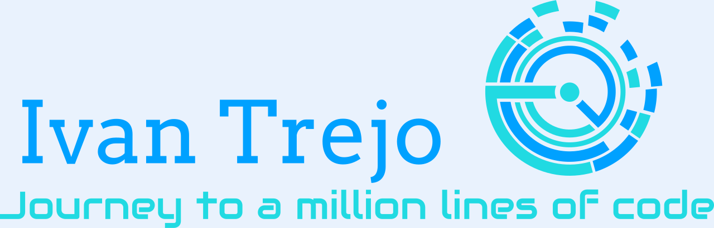

Selected proof point
Client-scale product ownership
Owns the product lifecycle for data reporting and claims processing systems serving 690+ client companies, from ideation and requirements through execution, release, and iteration.

Ivan Trejo ValleMarine veteran turned technical product leader
Technical Product Manager, Software Engineer, and Solution Manager with 4+ years building data, claims, automation, and workflow solutions across healthcare and military operations.
Recruiters, product leaders, and engineering teams scan for different signals. Pick a focus and the portfolio highlights the most relevant proof points.
Selected proof point
Owns the product lifecycle for data reporting and claims processing systems serving 690+ client companies, from ideation and requirements through execution, release, and iteration.
Oct 2022 - Present
Cigna Healthcare
Leads product lifecycle, backlog refinement, solution documentation, stakeholder readouts, vendor coordination, and technical advisory across data reporting and claims processing systems.
2014 - 2022
Operations, training, data, and software foundations
Managed high-accountability logistics, federal database administration, and training operations before completing Code Platoon and mentoring new developers as a volunteer teaching assistant.
Roadmapping, requirements, user stories, PI planning, backlog refinement, release management.
JavaScript, Python, SQL, HTML, CSS, Node.js, React, Django, SAS, system design.
Databricks, Tableau, SQL Server, PostgreSQL, Oracle, Alation, data dictionaries.
Claude, GPT, Cursor, Copilot, BMAD, workflow automation, documentation synthesis.
Stakeholder trust, vendor coordination, risk communication, training, SOPs, delivery governance.
AWS Certified Cloud Practitioner, GitHub, GitBash, PuTTY, WinSCP, production release windows.
Replaced an unscalable email-based vendor request process with a structured JIRA workflow that improved visibility, response time, and team throughput.
Coordinated vendors, internal teams, data flow diagrams, mappings, and release windows for a multi-system data processing workflow.
Customized BMAD, Cursor, Claude, and GPT workflows into repeatable planning, documentation, and execution patterns for product teams.
JavaScript, HTML, and CSS practice projects that show the start of the technical transition and the discipline behind continued growth.
View theme clock projectI’m interested in roles and conversations where product strategy, engineering depth, AI-assisted delivery, and stakeholder trust all matter.